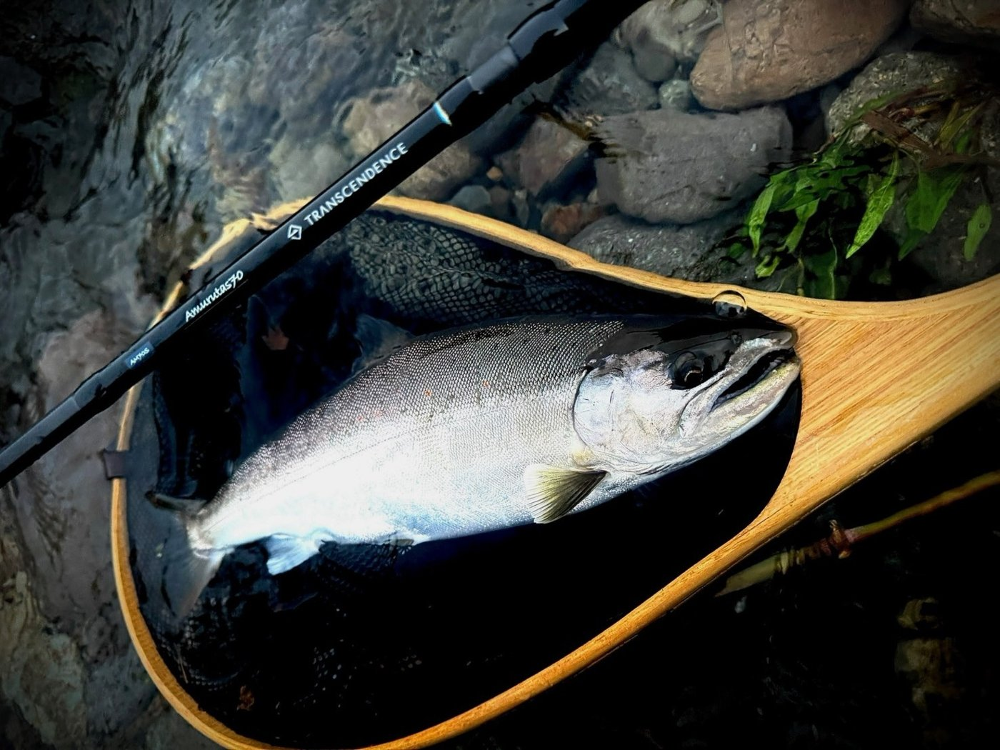
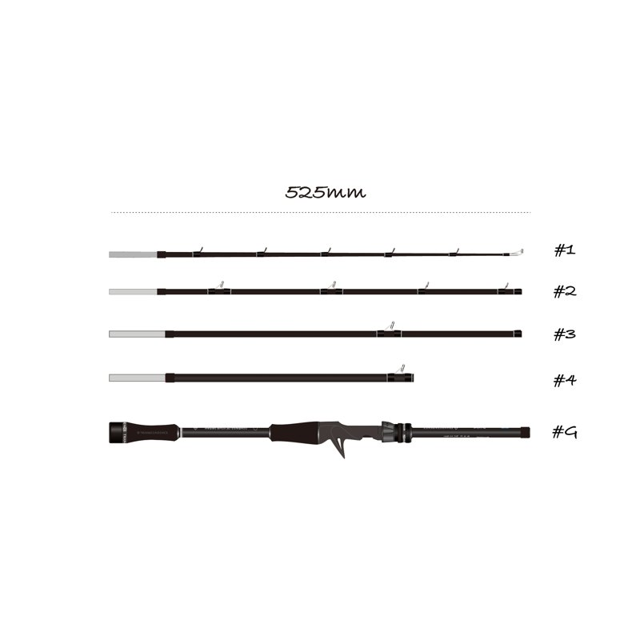
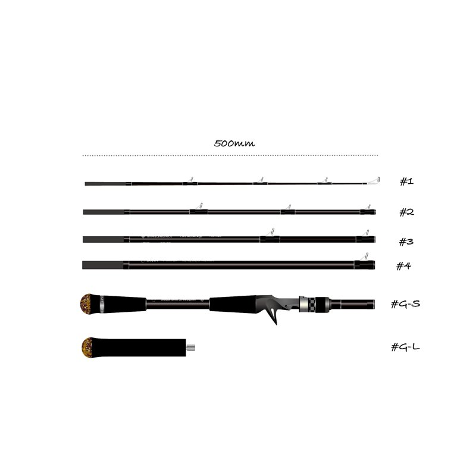
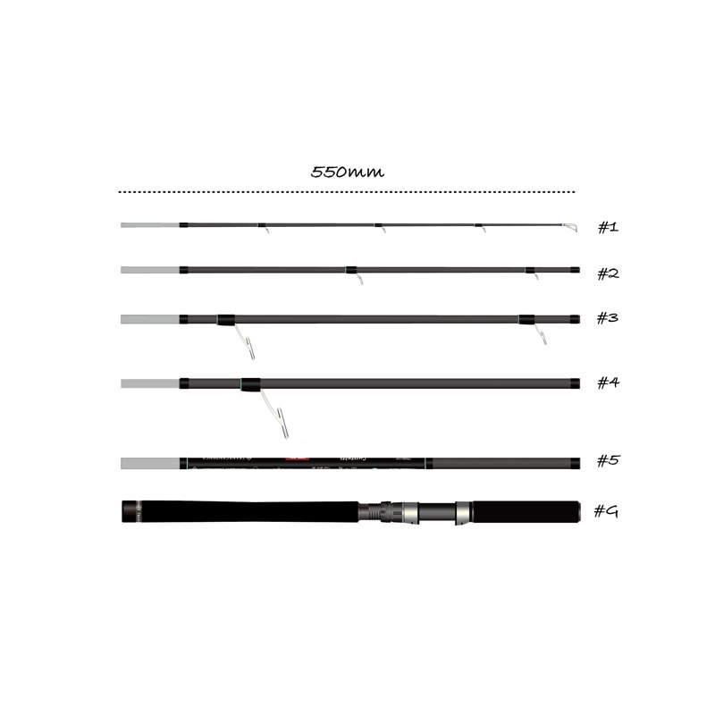
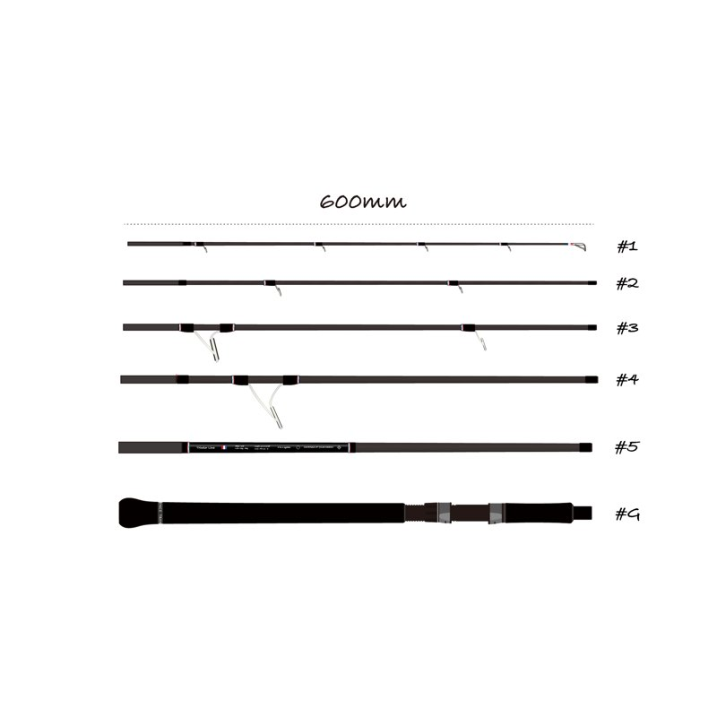
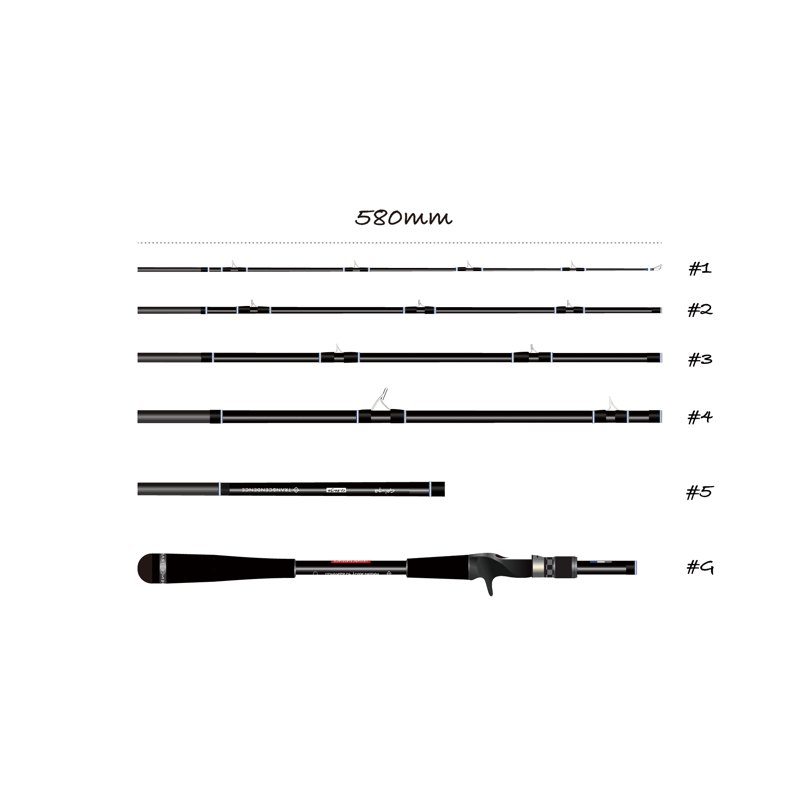

TRANSCENDENCE（トランスセンデンス）「Pack rod is not a compromise.」全ロッドがパックロッドのブランド
オリジナルモデルのほぼすべてがマルチピースのパックロッドというブランド。アマゾンで大物に折られたパックロッドの悔しさから生まれ、「簡単に壊れないマルチピースロッド」を作り続けています。長さを変えられる可変レングスのモデルも多く、近所の釣りから海外遠征まで1本で楽しめます。特徴と、人気のロッドをまとめました。

画像出典:TRANSCENDENCE公式HP
基本データ
| ブランド名 | TRANSCENDENCE（トランスセンデンス） |
|---|---|
| 運営会社 | TransHeritageJapan Co., Ltd. |
| 代表者 | 片山 正顕 |
| 得意ジャンル | パックロッド（マルチピースロッド）。シーバス・バス・ロックフィッシュ・渓流から、GT・ヒラマサ・マグロまで |
| コンセプト | Pack rod is not a compromise.／The whole world is your field! |
| 代表ロッド | プルクラ62B+、LateBloomings510+、Currentes82S+、エンピナード91S+、Galupa86B+ |
| 公式 | transcendence555.com |
※ラインナップは変わることがあります。最新情報は公式サイトでご確認ください。
TRANSCENDENCEの3つの特徴
1「壊れないパックロッド」から始まったブランド
代表の片山正顕さんが、アマゾン遠征で100kgを超えるピライーバ（大型ナマズ）を相手に、持って行ったマルチピースロッドを簡単に壊されたのがきっかけ。「簡単に壊れないマルチピースロッド」を作ろうと生まれたブランドで、オリジナルモデルのほぼすべてがパックロッドです。
2長さを変えられる「可変レングス」
多くのモデルが、ピースの組み替えで長さやパワーを変えられる可変レングス。たとえばLateBloomings510+は5ft10in〜7ft7inの4パターンに変えられ、1本で何役もこなせます。マルチピースだからこそ各ピースに違う役割を持たせられ、2ピースでは作れないテーパーになるとしています。
3近所の釣りから、世界の大物まで
渓流トラウト用の小さなモデルから、シーバス・バス・ロックフィッシュ、GT・ヒラマサ・マグロを狙うオフショアキャスティングまで、ラインナップは約30機種。破損したときもピース単位で交換でき、遠征先でもすぐ釣りに戻れるのもマルチピースの強みです。
代表
片山 正顕（かたやま まさあき）
環境コンサルタントとして会社勤めを経て、TRANSCENDENCEを立ち上げた代表。ハンドメイドルアーブランド「VAZICK」や「Chilltrip」の代表も務め、メインフィールドはオフショア。開発のポリシーは「使い手がワクワク・妄想できるロッド」。
TRANSCENDENCEの人気ロッド5選
ほとんどのモデルが、ピースの組み替えで長さを変えられます。まずは「何を、どこで釣りたいか」から選びましょう。

プルクラ62B+（Pulchra62B+）ベイト・バーサタイル
ブラックバス・シーバス・ピーコックバスなどを1本でこなすバーサタイルなベイトロッド。「トランスシステム」でセクションを組み替えると、6.2ftと7.3ftの2つの長さで使えます。
ティップはML、ベリーはM、バットはH〜XHクラスと、ピースごとに役割を持たせたテーパーが特徴です。
👉 詳しくは プルクラ62B+の解説記事／公式サイトの製品ページ へ

LateBloomings510+ベイト・バーサタイル
「究極のバーサタイル」とうたわれる、4つの長さに変えられるモデル。シーバス・ブラックバス・ピーコックバス・バラマンディ・トーマンなど、国内外の魚に対応します。
スピニング版として「Mistral-XX」もあり、こちらは長さを7パターンに変えられます。
👉 詳しくは 公式サイトの製品ページ へ

Currentes82S+スピニング・シーバス
シーバスやマゴチを狙うショアキャスティング用のスピニングロッド。8.2ftと9.8ftに長さを変えられ、港湾から河川・サーフまで使い分けられます。
仕舞寸法55cmで、電車釣行や出張にも持って行きやすいサイズです。
👉 詳しくは カレンテス82S+の解説記事／公式サイトの製品ページ へ

エンピナード91S+（Empinado91S+ REV.2）スピニング・ヒラスズキ
ヒラスズキやシーバスを狙う、MHクラスのショアキャスティングロッド。9.1ftと10.8ftに長さを変えられ、磯のヒラスズキにも対応します。
重めのルアーまで扱えるパワーを持ちながら、仕舞寸法は60cmに収まります。
👉 詳しくは エンピナード91S+の解説記事／公式サイトの製品ページ へ

Galupa86B+ベイト・ロックフィッシュ
ハタなどのロックフィッシュやシーバスを狙う、ハードロックショア用のベイトロッド。8.6ftと9.6ftに長さを変えられます。
根に潜る大型のハタを止めるパワーを持ったパックロッドです。
👉 詳しくは 公式サイトの製品ページ へ
※スペックは公式サイトの記載より。モデルや仕様は変わることがあります。
画像出典:TRANSCENDENCE公式HP
最初の1本の選び方
- バス・シーバスを1本で → プルクラ62B+
- 港湾・河川のシーバス → Currentes82S+
- 磯のヒラスズキ → エンピナード91S+
- ロックショアのハタ → Galupa86B+
- 渓流のトラウト → Dwarve-XX（仕舞42cm）
よくある質問
TRANSCENDENCEはどこのメーカー？
日本のブランドです。TransHeritageJapan Co., Ltd.が運営しています。
なぜパックロッドばかりなの？
代表の片山正顕さんが、アマゾン遠征でマルチピースロッドを大物に壊された経験から「簡単に壊れないマルチピースロッド」を作ろうと始めたブランドだからです。持ち運びやすさに加えて、長さを変えられる、壊れたピースだけ交換できる、といったマルチピースならではの強みを生かしています。
パックロッドは2ピースより性能が落ちない？
TRANSCENDENCEは「Pack rod is not a compromise.（パックロッドは妥協ではない）」を掲げ、ピースごとに違う役割を持たせることで、2ピースでは作れないテーパーを実現しているとしています。